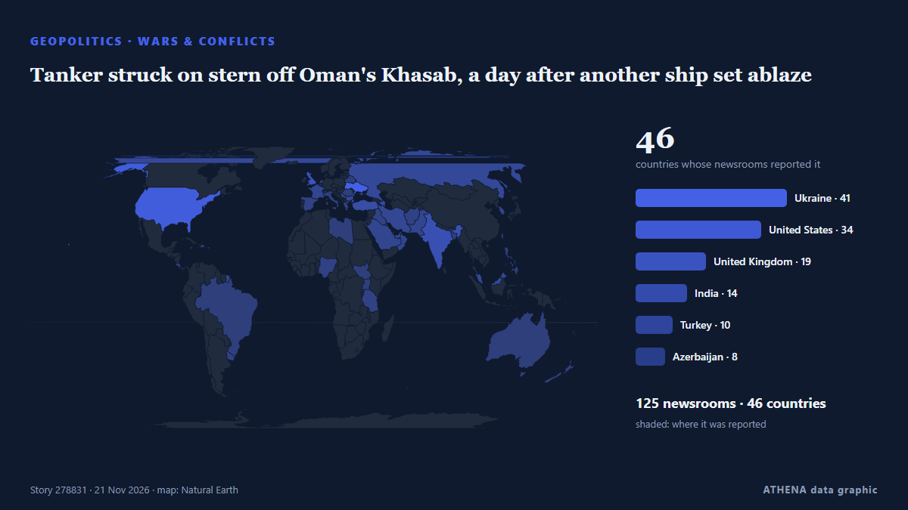

Guerres et conflits
SponsoriséPrésenté par  Cybernetics and Artificial Intelligence Lab Welcome to the Cybernetics and Artificial Intelligence Laboratory, established at the Department of Business Administration of the National and Kapodistrian University of Athens. The lab is headed by Professor Dimitrios Thomakos. The lab aims to do research that can be published in top venues. Our research uses tools and methods of Artificial Intelligence, and lies in the following areas: - Forecasting - Decision making - Cyber security - Finance We are always looking forward to collaborating with exceptional students!
Cybernetics and Artificial Intelligence Lab Welcome to the Cybernetics and Artificial Intelligence Laboratory, established at the Department of Business Administration of the National and Kapodistrian University of Athens. The lab is headed by Professor Dimitrios Thomakos. The lab aims to do research that can be published in top venues. Our research uses tools and methods of Artificial Intelligence, and lies in the following areas: - Forecasting - Decision making - Cyber security - Finance We are always looking forward to collaborating with exceptional students!
| 8 nov. | 1 |
|---|---|
| 9 nov. | 0 |
| 10 nov. | 1 |
| 11 nov. | 0 |
| 12 nov. | 0 |
| 13 nov. | 0 |
| 14 nov. | 1 |
| 15 nov. | 2 |
| 16 nov. | 0 |
| 17 nov. | 2 |
| 18 nov. | 8 |
| 19 nov. | 4 |
| 20 nov. | 4 |
| 21 nov. | 1 |
Les titres sont affichés en anglais, tels que publiés.

Tanker struck on stern off Oman's Khasab, a day after another ship set ablaze
Relayé par 129 médias dans 46 pays depuis le 14 nov. Premier à l'annoncer : Guardian Business. ATHENA évalue le risque à 5.8/10 (accru), avec 86 % de confiance.
Yemen's Houthis threaten to strike Saudi Red Sea ports
Yemen’s Houthis threatened on Friday to attack Saudi Arabia’s Red Sea ports if Saudi-led coalition forces struck the strategic Red Sea port of Hodeidah. de Business Recorder
At Least 9 Killed In Russian Attacks On Ukraine, Kyiv Bridges Damaged
At least nine people were killed and 28 injured on November 20 in an overnight Russian drone and ballistic missile attack on Ukraine. de RFE/RL (English)
PM Shehbaz condemns Houthi attack on Riyadh’s King Abdullah Financial District
He says Pakistan stands in unwavering solidarity with Saudi Arabia and its people. de Express Tribune
Estonia to close border with Russia for at least six months
The decision is a response to Russia’s ongoing hostile actions against Estonia. de The Straits Times
US strikes IRGC missile launch site on Iran's Qeshm Island
The Islamic Revolutionary Guard Corps (IRGC) of Iran announced the downing of a US MQ-1 reconnaissance drone in the area of Qeshm island in southern Iran, Tasnim reports. de NEWS.am (English)
Denmark condemns damage to Austrian, Dutch embassies in Kyiv
Foreign minister reaffirms Copenhagen's support for Ukraine following Russian strikes on Ukrainian capital. de Anadolu Agency (English)
Haiti: Salvador’s Bukele publishes video of attack on gang leader’s house
Salvadoran President Nayib Bukele said Wednesday that his troops demolished the lavish home of a prominent gang leader in Haiti known as Jeff Gwo Lwa. de France 24 English
Riyadh’s tallest skyscraper hit in Houthi strike
Riyadh’s tallest skyscraper, headquarters of the Saudi sovereign wealth fund, was struck on Thursday by a suspected Houthi missile in the latest blow in the Iran-backed Yemeni group’s war with the… de Daily Mirror
'We will not negotiate' — Putin addresses Ukraine's strikes on Crimean Bridge
The remarks marked the Russian president's first public reaction to the attacks on the bridge, which he described as having sustained "serious damage." de Kyiv Independent
Iraqi forces strike compromise with powerful pro-Iran militia, security officials say
BAGHDAD, Nov 19 - Iraq has reached a compromise with the powerful Iran-backed militia Kataib Hezbollah, three senior security officials said, after Prime Minister Ali al-Zaidi readied security forces… de The Straits Times
Saudi-led coalition says it intercepted Houthi missile targeting southern region
Nov 20 - Saudi air defences intercepted and destroyed a ballistic missile launched by Yemen's Iran-aligned Houthi movement towards the kingdom's southern region, the Saudi-led coalition said on… de The Straits Times
Two major Kyiv bridges hit in Russian attack, mayor says
The Porsche Zahid dealership in Kyiv region was damaged in a Russian attack and has temporarily suspended operations. de Ukrinform (English)
Hegseth, in Caracas, announces US-Venezuela military partnership agreement
He said the cooperation will ramp up joint action against drug trafficking groups. de The Straits Times
Israel army says completed central Gaza ground operation
The Israeli military has announced the completion of its ground operation in central Gaza, near Al-Bureij and Nuseirat refugee camps. de Arab News
Prince Harry: I’d rejoin the military to fight Russia
Prince Harry spoke exclusively to The Telegraph's Ukraine: The Latest podcast during an unannounced visit to Lviv. de Business Insider
Israel begins new military operation in Gaza
Israeli tanks advanced in an area of the central Gaza Strip on Wednesday, witnesses said, and the Israeli military said its forces were targeting Hamas infrastructure outside the "Yellow Line" that… de France 24 English
Ukrainian Drone Attacks Halve Russian Oil Refining in November
Ukrainian drone attacks have slashed Russian oil refineries' combined crude processing volumes by 45% since late October, according to estimates from two industry sources, as Kyiv ramps up strikes on… de MarineLink
Iran fires on US airbase in Kuwait, several times at Bahrain
Iran fired on a US airbase in Kuwait and several times at Bahrain on Wednesday, in what appeared to be retaliation for US strikes the day before, AP reported. de Gulf News